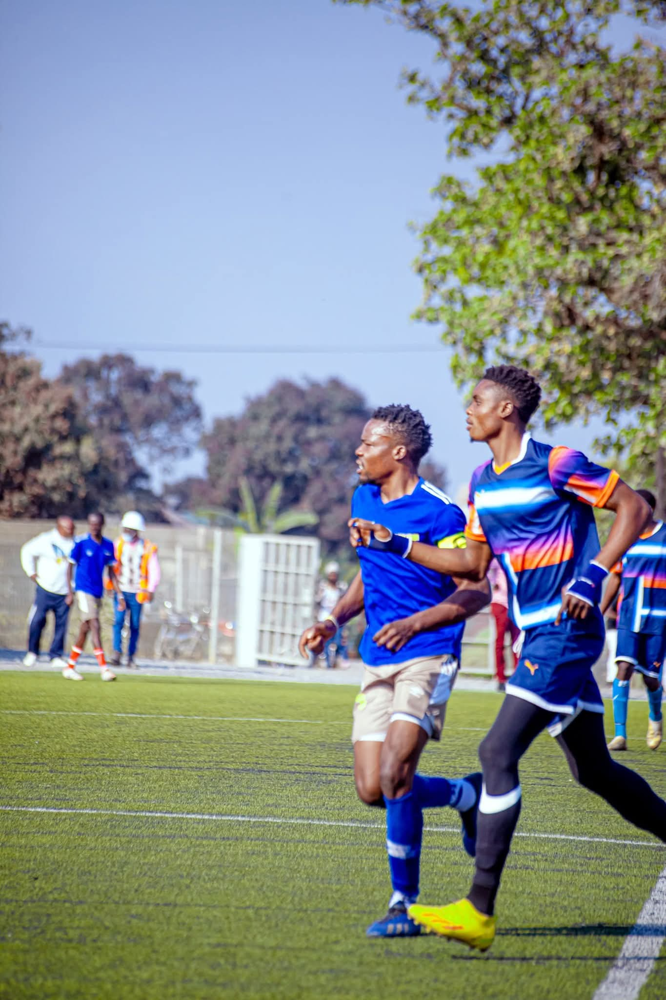
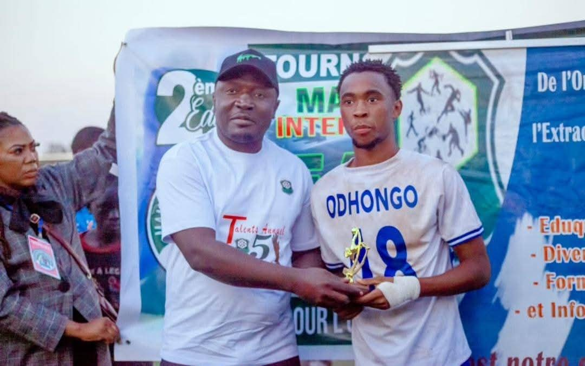
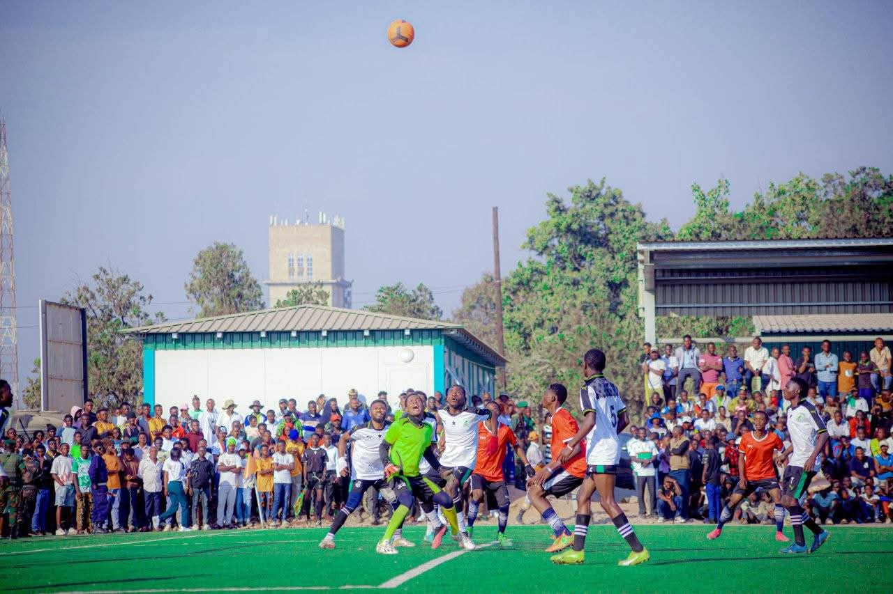
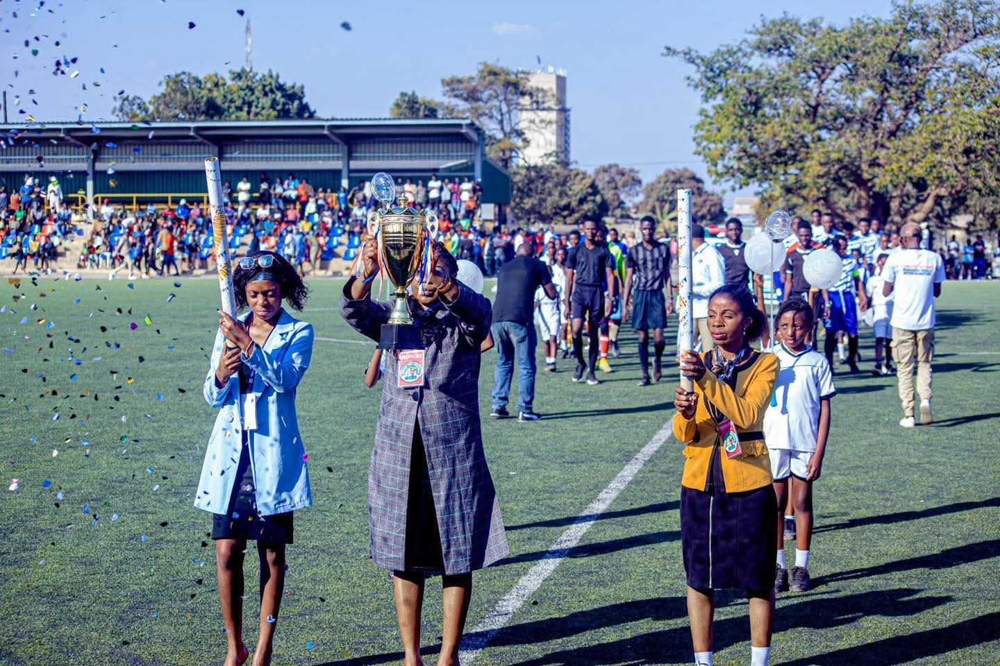
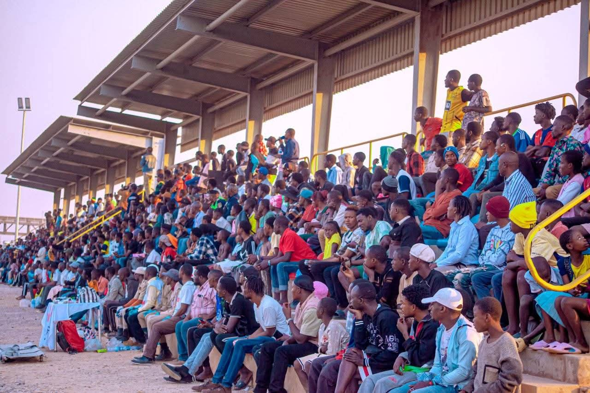
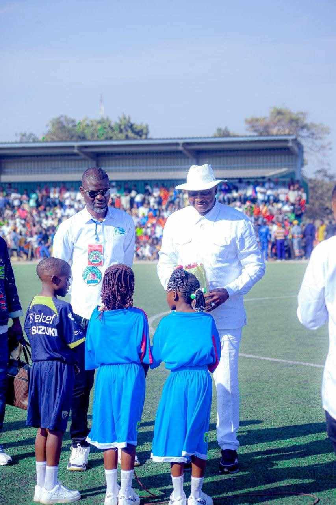

Notre histoire, édition après édition
Trois éditions, une seule passion. Retour en images sur le chemin parcouru par le tournoi Inter-quartier de Kipushi depuis ses débuts.
Les débuts d'une belle aventure

Première édition du tournoi Inter-quartier de Kipushi a marqué le début d'une grande aventure sportive, réunissant les jeunes autour de la passion du football.

Dès l'ouverture, les équipes ont montré un engagement total, offrant au public des rencontres intenses et pleines d'émotions.

Un match très disputé a retenu l'attention, avec un suspense qui a duré jusqu'au coup de sifflet final.

Un but spectaculaire inscrit à distance a été l'un des moments les plus marquants de cette édition.

Les supporters ont animé chaque rencontre, créant une ambiance chaleureuse et inoubliable.

La finale s'est conclue par une victoire méritée, suivie d'une remise de trophée pleine d'émotion.
Une organisation qui grandit

La deuxième édition a démarré avec une organisation améliorée et une participation encore plus importante des équipes.

Les matchs de groupe ont été riches en actions offensives et en performances individuelles remarquables.

Un arrêt décisif du gardien lors d'un match crucial a changé le cours de la compétition.

L'ambiance dans les tribunes a atteint un niveau supérieur, avec des supporters toujours plus engagés.

Les demi-finales ont offert un spectacle de haut niveau, avec des équipes déterminées à atteindre la finale.

La finale a été un moment fort, marquée par une grande intensité et une victoire célébrée avec fierté.
L'édition la plus ambitieuse

La troisième édition du tournoi s'annonce comme la plus ambitieuse, avec des équipes prêtes à se dépasser.

La cérémonie d'ouverture a été marquée par une forte mobilisation et une organisation remarquable aux yeux des autorités locales.

Les premières rencontres ont déjà révélé un niveau de jeu élevé et une grande compétitivité.

Les supporters continuent de jouer un rôle clé en soutenant leurs équipes avec passion.

Plusieurs moments forts ont déjà marqué cette édition, confirmant son importance dans la communauté.

Cette édition promet une finale exceptionnelle qui viendra écrire une nouvelle page de l'histoire du tournoi.